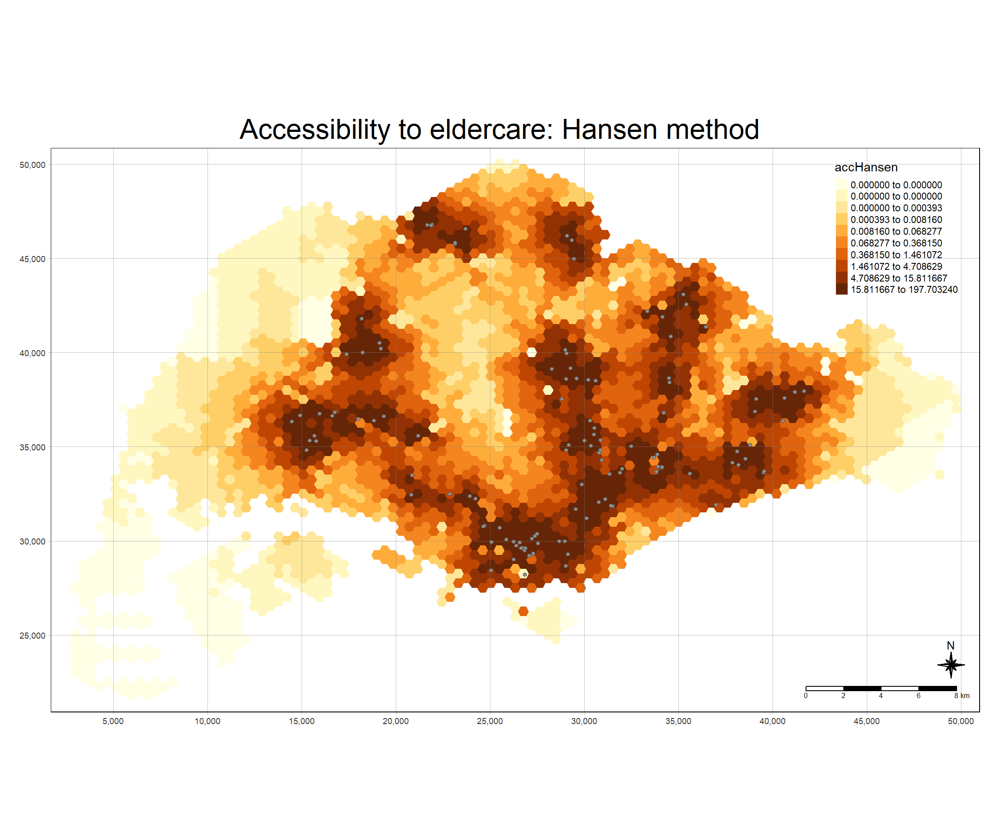
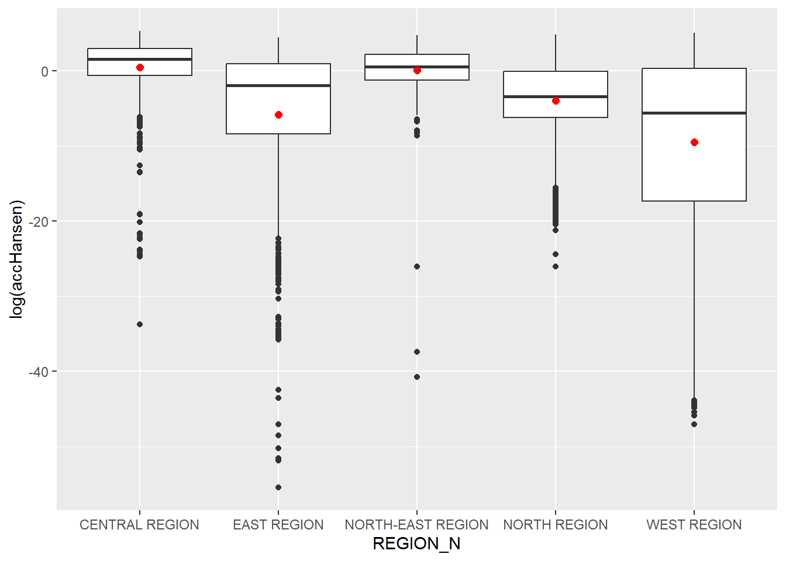
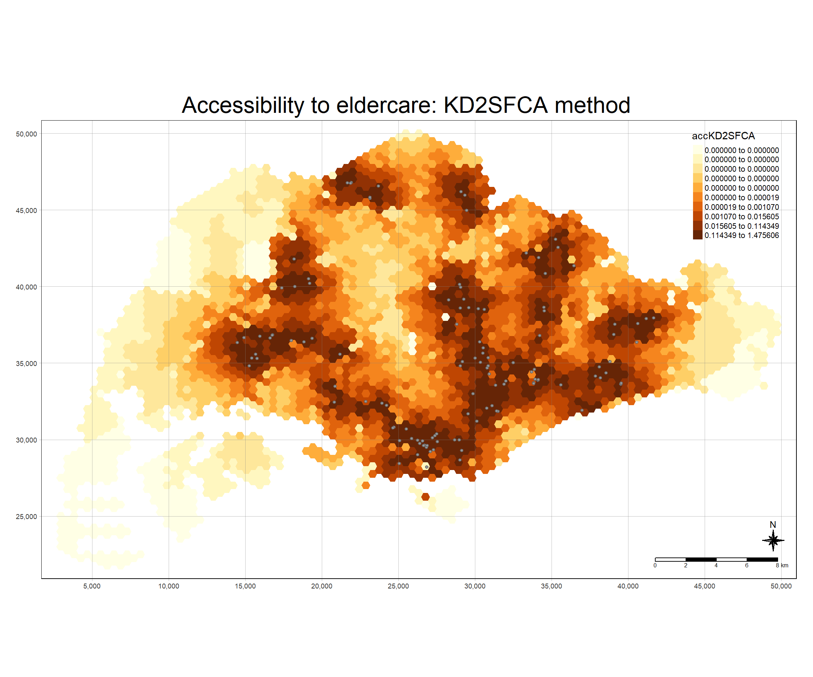
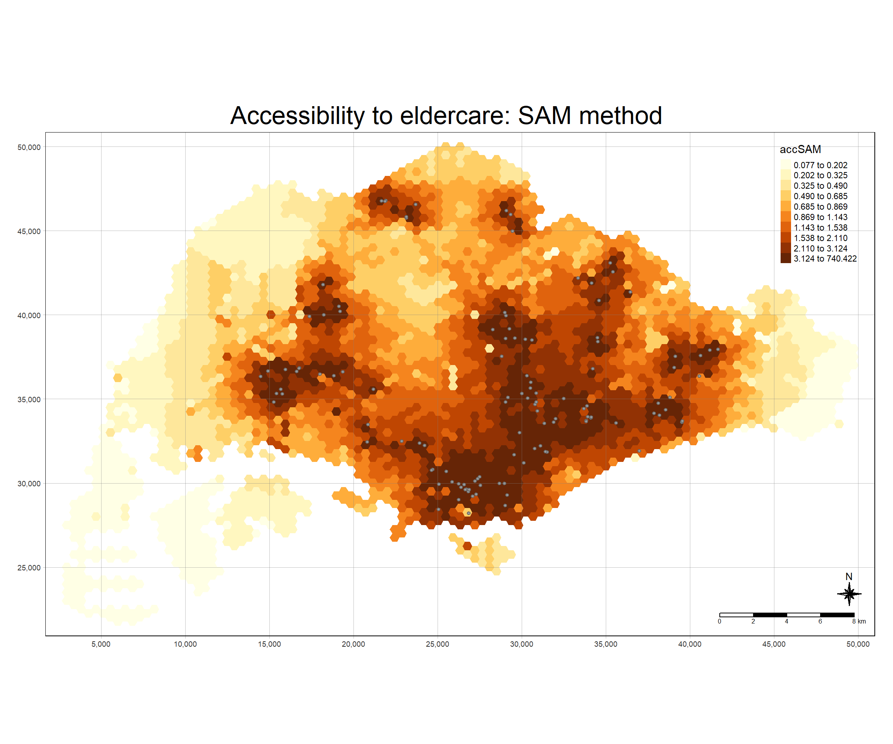
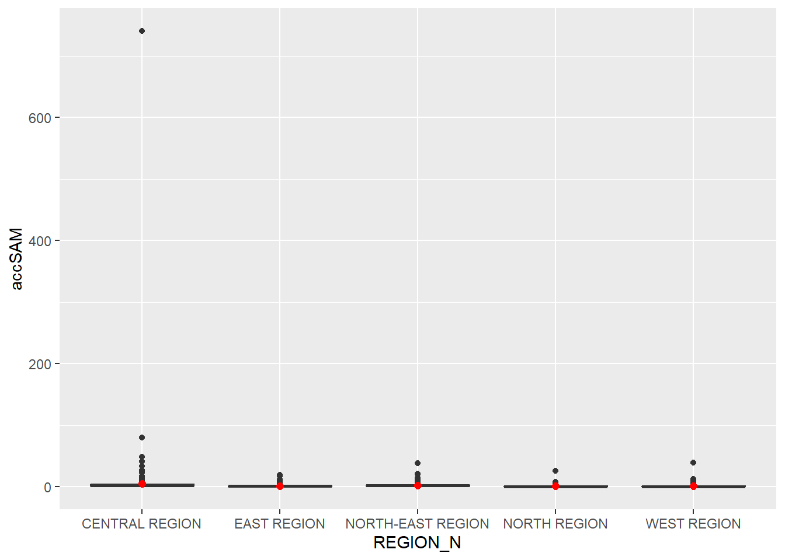

pacman::p_load(tmap, SpatialAcc, sf,
ggstatsplot, reshape2,
tidyverse)Hands-On Exercise 09
Data Sources
(saved under ‘data’ folder)
Four data sets will be used in this hands-on exercise, they are:
MP14_SUBZONE_NO_SEA_PL: URA Master Plan 2014 subzone boundary GIS data. This data set is downloaded from data.gov.sg.hexagons: A 250m radius hexagons GIS data. This data set was created by using st_make_grid() of sf package. It is in ESRI shapefile format.ELDERCARE: GIS data showing location of eldercare service. This data is downloaded from data.gov.sg. There are two versions. One in ESRI shapefile format. The other one in Google kml file format. For the purpose of this hands-on exercise, ESRI shapefile format is provided.OD_Matrix: a distance matrix in csv format. There are six fields in the data file. They are:origin_id: the unique id values of the origin (i.e.fidof hexagon data set.),destination_id: the unique id values of the destination (i.e.fidofELDERCAREdata set.),entry_cost: the perpendicular distance between the origins and the nearest road),network_cost: the actual network distance from the origin and destination,exit_cost: the perpendicular distance between the destination and the nearest road), andtotal_cost: the summation ofentry_cost,network_costandexit_cost.
Note
All the values of the cost related fields are in metres.
Chapter 17: Modelling Geographical Accessibility
17.1 Setting Up
The goal of this exercise is to:
- to import GIS polygon data into R and save them as simple feature data frame by using appropriate functions of sf package of R;
- to import aspatial data into R and save them as simple feature data frame by using appropriate functions of sf package of R;
- to computer accessibility measure by using Hansen’s potential model and Spatial Accessibility Measure (SAM); and
- to visualise the accessibility measures by using tmap and ggplot2 packages.
17.1.1 Loading the R packages
-sf package to perform geospatial wrangling tasks
-SpatialAcc package to model geographical accessibility tasks
- ggstatsplot package for statistical analysis
- tmap and ggplot2 package for plotting tasks
-tidyverse and reshape2 package for reading csv files, dataframe processing tasks
17.1.2 Importing Geospatial Data
st_read() from sf package will be used to load the geospatial datasets. Projection will also be done with st_transform() to 3414.
# Import mpsz data
mpsz <- st_read(dsn = "data/geospatial", layer = "MP14_SUBZONE_NO_SEA_PL") %>%
st_transform(3414)Reading layer `MP14_SUBZONE_NO_SEA_PL' from data source
`C:\Users\Henry\Desktop\SMU Masters\2024-2025 T1\Geospatial Analytics & Applications\Project\GeospatialWebsite\Hands-On_Ex\Hands-On_Ex_09\data\geospatial'
using driver `ESRI Shapefile'
Simple feature collection with 323 features and 15 fields
Geometry type: MULTIPOLYGON
Dimension: XY
Bounding box: xmin: 2667.538 ymin: 15748.72 xmax: 56396.44 ymax: 50256.33
Projected CRS: SVY21# Import hexagon data
hexagons <- st_read(dsn = "data/geospatial", layer = "hexagons") %>%
st_transform(3414)Reading layer `hexagons' from data source
`C:\Users\Henry\Desktop\SMU Masters\2024-2025 T1\Geospatial Analytics & Applications\Project\GeospatialWebsite\Hands-On_Ex\Hands-On_Ex_09\data\geospatial'
using driver `ESRI Shapefile'
Simple feature collection with 3125 features and 6 fields
Geometry type: POLYGON
Dimension: XY
Bounding box: xmin: 2667.538 ymin: 21506.33 xmax: 50010.26 ymax: 50256.33
Projected CRS: SVY21 / Singapore TM# Import eldercare data
eldercare <- st_read(dsn = "data/geospatial", layer = "ELDERCARE") %>%
st_transform(3414)Reading layer `ELDERCARE' from data source
`C:\Users\Henry\Desktop\SMU Masters\2024-2025 T1\Geospatial Analytics & Applications\Project\GeospatialWebsite\Hands-On_Ex\Hands-On_Ex_09\data\geospatial'
using driver `ESRI Shapefile'
Simple feature collection with 120 features and 19 fields
Geometry type: POINT
Dimension: XY
Bounding box: xmin: 14481.92 ymin: 28218.43 xmax: 41665.14 ymax: 46804.9
Projected CRS: SVY21 / Singapore TMst_crs() can be used to ensure that the project is done successfully.
# Check projection
st_crs(mpsz)Coordinate Reference System:
User input: EPSG:3414
wkt:
PROJCRS["SVY21 / Singapore TM",
BASEGEOGCRS["SVY21",
DATUM["SVY21",
ELLIPSOID["WGS 84",6378137,298.257223563,
LENGTHUNIT["metre",1]]],
PRIMEM["Greenwich",0,
ANGLEUNIT["degree",0.0174532925199433]],
ID["EPSG",4757]],
CONVERSION["Singapore Transverse Mercator",
METHOD["Transverse Mercator",
ID["EPSG",9807]],
PARAMETER["Latitude of natural origin",1.36666666666667,
ANGLEUNIT["degree",0.0174532925199433],
ID["EPSG",8801]],
PARAMETER["Longitude of natural origin",103.833333333333,
ANGLEUNIT["degree",0.0174532925199433],
ID["EPSG",8802]],
PARAMETER["Scale factor at natural origin",1,
SCALEUNIT["unity",1],
ID["EPSG",8805]],
PARAMETER["False easting",28001.642,
LENGTHUNIT["metre",1],
ID["EPSG",8806]],
PARAMETER["False northing",38744.572,
LENGTHUNIT["metre",1],
ID["EPSG",8807]]],
CS[Cartesian,2],
AXIS["northing (N)",north,
ORDER[1],
LENGTHUNIT["metre",1]],
AXIS["easting (E)",east,
ORDER[2],
LENGTHUNIT["metre",1]],
USAGE[
SCOPE["Cadastre, engineering survey, topographic mapping."],
AREA["Singapore - onshore and offshore."],
BBOX[1.13,103.59,1.47,104.07]],
ID["EPSG",3414]]17.1.3 Geospatial Data Wrangling
Since there are redundant fields in the loaded eldercare and hexagon datasets, I will need to filter them to select only the fields i need. New fields called demand and capacity will be created for hexagons and eldercare sf dataframe respectively with mutate() from dplyr package.
# Process eldercare dataframe
eldercare <- eldercare %>%
select(fid, ADDRESSPOS) %>%
mutate(capacity = 100)
# Process hexagons dataframe
hexagons <- hexagons %>%
select(fid) %>%
mutate(demand = 100)
Note
While a constant value of 100 is used, in actual practice actual demand of the hexagon and eldercare centre capacity should be used instead.
17.1.4 Importing Aspatial Data
Using read_csv() from readr package, I will load in the OD_Matrix.csv dataset.
# Load OD_matrix data
ODMatrix <- read_csv("data/aspatial/OD_Matrix.csv", skip = 0)Rows: 375000 Columns: 6
── Column specification ────────────────────────────────────────────────────────
Delimiter: ","
dbl (6): origin_id, destination_id, entry_cost, network_cost, exit_cost, tot...
ℹ Use `spec()` to retrieve the full column specification for this data.
ℹ Specify the column types or set `show_col_types = FALSE` to quiet this message.# Check data
ODMatrix# A tibble: 375,000 × 6
origin_id destination_id entry_cost network_cost exit_cost total_cost
<dbl> <dbl> <dbl> <dbl> <dbl> <dbl>
1 1 1 668. 19847. 47.6 20562.
2 1 2 668. 45027. 31.9 45727.
3 1 3 668. 17644. 173. 18486.
4 1 4 668. 36010. 92.2 36770.
5 1 5 668. 31068. 64.6 31801.
6 1 6 668. 31195. 117. 31980.
7 1 8 668. 32475. 55.1 33198.
8 1 9 668. 22267. 28.4 22963.
9 1 10 668. 45220. 55.1 45943.
10 1 11 668. 34898. 27.5 35593.
# ℹ 374,990 more rowsFrom this, we can see that the distance matrix is in a long format, row-wise with “origin_id” and “destination_id”. Most modelling packages in R expects a wide format with row representing “origin” (from), and columns representing “destination” (to). Therefore, I will need to use pivot_wider() from tidyr package to transform the OD matrix from long to wide format.
# Pivot OD matrix
distmat <- ODMatrix %>%
select(origin_id, destination_id, total_cost) %>%
# spread(destination_id, total_cost) %>%
pivot_wider(names_from = destination_id, values_from = total_cost) %>% # Use pivot_wider() instead
select(c(-c('origin_id')))Since the distance is measured in metre (due to SVY21 projected coordinate system), I will create another matrix which is in kilometre.
# Km based OD matrix
distmat_km <- as.matrix(distmat/1000)17.2 Modelling and Visualizing Accessibility (Hansen Method)
17.2.1 Compute Hansen’s Accessibility
Now, I will use ac() from SpatialAcc package to compute Hansen’s accessibility. The following table provides an overview of the arguments of the function.
| Argument | Description |
|---|---|
| p | Vector that quantifies the demand for services in each location, usually the population at risk |
| n | Vector that quantifies the supply of services in each location, usually a characteristic of the service. |
| D | Matrix of a quantity separating the demand from the supply. This is usually a distance matrix, preferably using a road network distance or travel time through the road network. |
| d0 | Threshold distance or time that defines the catchment area (spatial kernel) |
| power | (default = 2) Power of the separation variable, usually 2 from the theory of gravity model in geography. |
| family | (default = “SAM”) Character value to define the accessibility measure function (“SAM”, “2SFCA”, “KD2SFCA”, “Hansen”) |
The output will be saved as a dataframe.
# Compute Hansen's accessibility
acc_Hansen <- data.frame(ac(hexagons$demand,
eldercare$capacity,
distmat_km,
#d0 = 50,
power = 2,
family = "Hansen"))
# Check output
head(acc_Hansen) ac.hexagons.demand..eldercare.capacity..distmat_km..power...2..
1 1.648313e-14
2 1.096143e-16
3 3.865857e-17
4 1.482856e-17
5 1.051348e-17
6 5.076391e-18Given the long field name, I will rename it to “accHansen”. Next, i will convert it into tibble format using tbl_df(). Finally, bind_cols() from dplyr will be used to join the acc_Hansen tibble dataframe with the hexagons sf dataframe.
# Rename column name
colnames(acc_Hansen) <- "accHansen"
# Convert to tibble
acc_Hansen <- as.tibble(acc_Hansen)Warning: `as.tibble()` was deprecated in tibble 2.0.0.
ℹ Please use `as_tibble()` instead.
ℹ The signature and semantics have changed, see `?as_tibble`.# Join to hexagon sf dataframe
hexagon_Hansen <- bind_cols(hexagons, acc_Hansen)
# Check result
hexagon_HansenSimple feature collection with 3125 features and 3 fields
Geometry type: POLYGON
Dimension: XY
Bounding box: xmin: 2667.538 ymin: 21506.33 xmax: 50010.26 ymax: 50256.33
Projected CRS: SVY21 / Singapore TM
First 10 features:
fid demand accHansen geometry
1 1 100 1.648313e-14 POLYGON ((2667.538 27506.33...
2 2 100 1.096143e-16 POLYGON ((2667.538 25006.33...
3 3 100 3.865857e-17 POLYGON ((2667.538 24506.33...
4 4 100 1.482856e-17 POLYGON ((2667.538 24006.33...
5 5 100 1.051348e-17 POLYGON ((2667.538 23506.33...
6 6 100 5.076391e-18 POLYGON ((2667.538 23006.33...
7 7 100 1.769616e-13 POLYGON ((3100.551 28756.33...
8 8 100 9.979647e-14 POLYGON ((3100.551 28256.33...
9 9 100 5.671831e-14 POLYGON ((3100.551 27756.33...
10 10 100 2.621063e-14 POLYGON ((3100.551 27256.33...17.2.2 Visualize Hansen’s Accessibility
Before processing to visualize the Hansen’s accessibility, I will need to extract the extent of hexagons sf dataframe with st_bbox() from sf package. tmap will then be used to visualize the hexagon with the extracted bounding box
# Extract hexagon extent
mapex <- st_bbox(hexagons)
# Set tmap mode to plot
tmap_mode("plot")tmap mode set to plotting# Visualize hansen accessibility
tm_shape(hexagon_Hansen,
bbox = mapex) +
tm_fill(col = "accHansen",
n = 10,
style = "quantile",
border.col = "black",
border.lwd = 1) +
tm_shape(eldercare) +
tm_symbols(size = 0.1) +
tm_layout(main.title = "Accessibility to eldercare: Hansen method",
main.title.position = "center",
main.title.size = 2,
legend.outside = FALSE,
legend.height = 0.45,
legend.width = 3.0,
legend.format = list(digits = 6),
legend.position = c("right", "top"),
frame = TRUE) +
tm_compass(type="8star", size = 2) +
tm_scale_bar(width = 0.15) +
tm_grid(lwd = 0.1, alpha = 0.5)
17.2.3 Statistical Graphic Visualization
Now, I am going to compare the distribution of Hansen’s accessibility values by URA planning region. Before doing so, I need to add the planning region field into hexagon_Hansen sf dataframe.
# Add planning region field
hexagon_Hansen <- st_join(hexagon_Hansen, mpsz,
join = st_intersects)Now, i can use gglot() to visualize the distribution with boxplots.
# Visualize hansen by planning region
ggplot(data=hexagon_Hansen,
aes(y = log(accHansen),
x= REGION_N)) +
geom_boxplot() +
geom_point(stat="summary",
fun.y="mean",
colour ="red",
size=2)Warning in geom_point(stat = "summary", fun.y = "mean", colour = "red", :
Ignoring unknown parameters: `fun.y`No summary function supplied, defaulting to `mean_se()`
17.3 Modelling and Visualizing Accessibility (KD2SFCA Method)
17.3.1 Compute KD2SFCA Accessibility
Given the steps to visualize accessibility are largely similar, I will do the same for the KD2SFCA method similar with Hansen’s method.
# Compute KD2SFCA accessibility
acc_KD2SFCA <- data.frame(ac(hexagons$demand,
eldercare$capacity,
distmat_km,
d0 = 50,
power = 2,
family = "KD2SFCA"))
# Rename column name
colnames(acc_KD2SFCA) <- "accKD2SFCA"
# Convert to tibble
acc_KD2SFCA <- as.tibble(acc_KD2SFCA)
# Join hexagon sf dataframe
hexagon_KD2SFCA <- bind_cols(hexagons, acc_KD2SFCA)
# Check result
hexagon_KD2SFCASimple feature collection with 3125 features and 3 fields
Geometry type: POLYGON
Dimension: XY
Bounding box: xmin: 2667.538 ymin: 21506.33 xmax: 50010.26 ymax: 50256.33
Projected CRS: SVY21 / Singapore TM
First 10 features:
fid demand accKD2SFCA geometry
1 1 100 1.745751e-149 POLYGON ((2667.538 27506.33...
2 2 100 1.849596e-192 POLYGON ((2667.538 25006.33...
3 3 100 4.442757e-202 POLYGON ((2667.538 24506.33...
4 4 100 3.938161e-211 POLYGON ((2667.538 24006.33...
5 5 100 1.985397e-214 POLYGON ((2667.538 23506.33...
6 6 100 1.706598e-221 POLYGON ((2667.538 23006.33...
7 7 100 4.852269e-131 POLYGON ((3100.551 28756.33...
8 8 100 2.223365e-135 POLYGON ((3100.551 28256.33...
9 9 100 9.933137e-140 POLYGON ((3100.551 27756.33...
10 10 100 8.756260e-146 POLYGON ((3100.551 27256.33...17.3.2 Visualize KD2SFCA Accessibility
Likewise, similar code will be used to visualize KD2SFCA accessibility. Since mapex is already created, I can just reuse it.
# Set tmap mode to plot
tmap_mode("plot")tmap mode set to plotting# Visualize KD2SFCA accessibility
tm_shape(hexagon_KD2SFCA,
bbox = mapex) +
tm_fill(col = "accKD2SFCA",
n = 10,
style = "quantile",
border.col = "black",
border.lwd = 1) +
tm_shape(eldercare) +
tm_symbols(size = 0.1) +
tm_layout(main.title = "Accessibility to eldercare: KD2SFCA method",
main.title.position = "center",
main.title.size = 2,
legend.outside = FALSE,
legend.height = 0.45,
legend.width = 3.0,
legend.format = list(digits = 6),
legend.position = c("right", "top"),
frame = TRUE) +
tm_compass(type="8star", size = 2) +
tm_scale_bar(width = 0.15) +
tm_grid(lwd = 0.1, alpha = 0.5)
17.3.3 Statistical Graphic Visualization
To compare the distribution of KD2SFCA accessibility by URA planning region, I will do the same as before - joining the planning region field before plotting the distribution with a boxplot
# Join planning region field
hexagon_KD2SFCA <- st_join(hexagon_KD2SFCA, mpsz,
join = st_intersects)
# Visualize KD2SFCA accessibility by planning region
ggplot(data=hexagon_KD2SFCA,
aes(y = accKD2SFCA,
x= REGION_N)) +
geom_boxplot() +
geom_point(stat="summary",
fun.y="mean",
colour ="red",
size=2)Warning in geom_point(stat = "summary", fun.y = "mean", colour = "red", :
Ignoring unknown parameters: `fun.y`No summary function supplied, defaulting to `mean_se()`
17.4 Modelling and Visualizing Accessibility (Spatial Accessibility Measure - SAM Method)
17.4.1 Compute SAM Accessibility
To use the spatial accessibility measure method, the code will be largely similar as other methods, with the exception of the family argument input. (SAM being used instead). The subsequent steps follow closely as the other methods.
# Compute sam accessibility
acc_SAM <- data.frame(ac(hexagons$demand,
eldercare$capacity,
distmat_km,
d0 = 50,
power = 2,
family = "SAM"))
# Rename column name
colnames(acc_SAM) <- "accSAM"
# Convert to tibble
acc_SAM <- as.tibble(acc_SAM)
# Join to hexagon sf dataframe
hexagon_SAM <- bind_cols(hexagons, acc_SAM)
# Check result
hexagon_SAMSimple feature collection with 3125 features and 3 fields
Geometry type: POLYGON
Dimension: XY
Bounding box: xmin: 2667.538 ymin: 21506.33 xmax: 50010.26 ymax: 50256.33
Projected CRS: SVY21 / Singapore TM
First 10 features:
fid demand accSAM geometry
1 1 100 0.11941792 POLYGON ((2667.538 27506.33...
2 2 100 0.10101549 POLYGON ((2667.538 25006.33...
3 3 100 0.09775876 POLYGON ((2667.538 24506.33...
4 4 100 0.09490965 POLYGON ((2667.538 24006.33...
5 5 100 0.09391923 POLYGON ((2667.538 23506.33...
6 6 100 0.09187587 POLYGON ((2667.538 23006.33...
7 7 100 0.13009759 POLYGON ((3100.551 28756.33...
8 8 100 0.12738225 POLYGON ((3100.551 28256.33...
9 9 100 0.12479277 POLYGON ((3100.551 27756.33...
10 10 100 0.12139059 POLYGON ((3100.551 27256.33...17.4.2 Visualize SAM Accessibility
To visualize SAM accessibility, I will reuse the mapex and code used to visualize other methods, updating the tm_shape() input with the corresponding hexagon sf dataframe containing SAM accessibility.
# Set tmap mode to plot
tmap_mode("plot")tmap mode set to plotting# Visualize SAM accessibility
tm_shape(hexagon_SAM,
bbox = mapex) +
tm_fill(col = "accSAM",
n = 10,
style = "quantile",
border.col = "black",
border.lwd = 1) +
tm_shape(eldercare) +
tm_symbols(size = 0.1) +
tm_layout(main.title = "Accessibility to eldercare: SAM method",
main.title.position = "center",
main.title.size = 2,
legend.outside = FALSE,
legend.height = 0.45,
legend.width = 3.0,
legend.format = list(digits = 3),
legend.position = c("right", "top"),
frame = TRUE) +
tm_compass(type="8star", size = 2) +
tm_scale_bar(width = 0.15) +
tm_grid(lwd = 0.1, alpha = 0.5)
17.4.3 Statistical Graphic Visualization
To compare the distribution of SAM accessibility by URA planning region, the same can be done - join the planning region field then use
# Join planning region field
hexagon_SAM <- st_join(hexagon_SAM, mpsz,
join = st_intersects)
# Visualize sam accessibility by planning region
ggplot(data=hexagon_SAM,
aes(y = accSAM,
x= REGION_N)) +
geom_boxplot() +
geom_point(stat="summary",
fun.y="mean",
colour ="red",
size=2)Warning in geom_point(stat = "summary", fun.y = "mean", colour = "red", :
Ignoring unknown parameters: `fun.y`No summary function supplied, defaulting to `mean_se()`